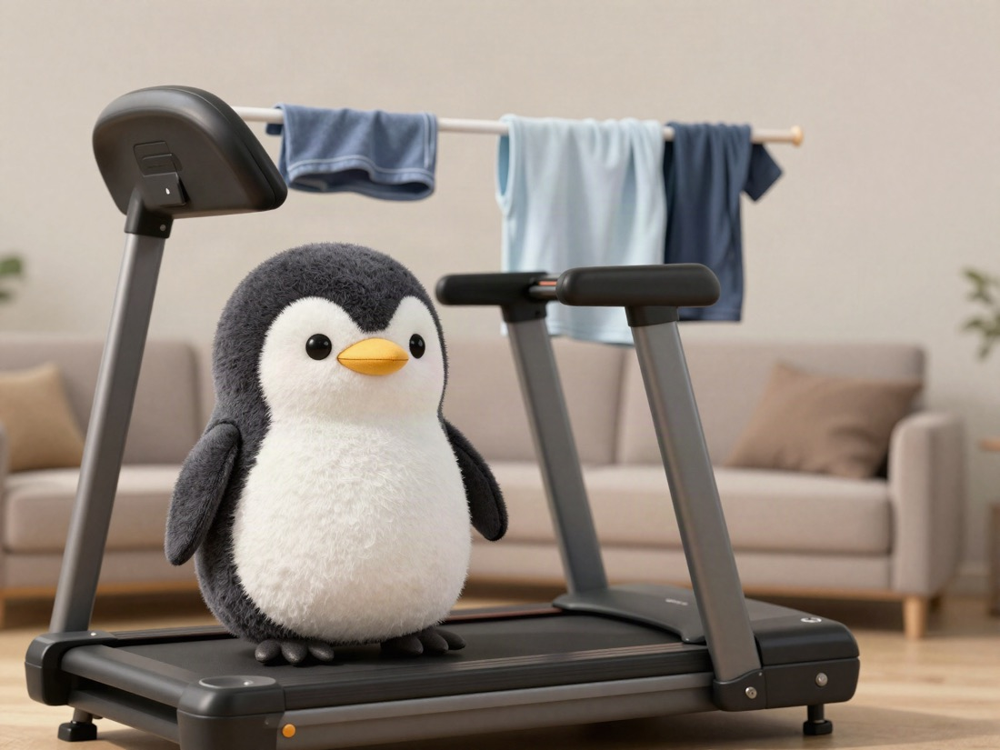

🐧 EVERYDAY LIFE⚡ 12 SEC
I regret buying a running machine because it just sits there 🏃
The Verdict
The thing I regret buying in 2026.
One Object
A running machine.

Just Sitting
It is heavy, and just having it in my sight makes my mood drop a little.
The Reason
Because it makes me feel, ah, I have to exercise.
😌✨
PREVIOUS POST
When choosing a mental health clinic, one with many doctors may be better